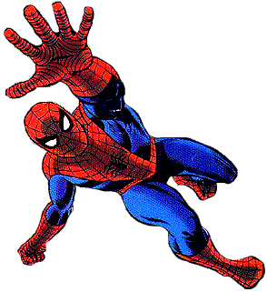
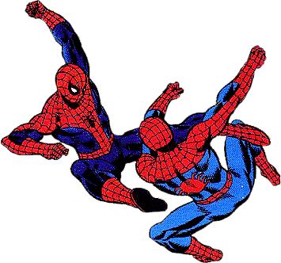
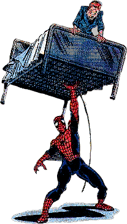
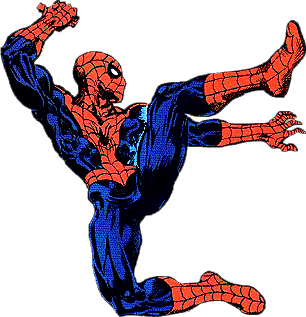

History of

Through Comics
History of
Through Comics
Amazing Fantasy was a comic that was on its last legs way back in 1962...It wasn't selling as good as its fellow Mystery/ Suspense/ Horror/ Monster Titles like Tales Of Suspense, Tales To Astonish, Journey Into Mystery (Which was soon to be the feature comic of Thor) and Strange Tales (Human Torch solo adventures)...It also went through a couple of changes in its Title to gain newer readers: Amazing Adventures, Amazing Adult Fantasy, and for its planned last issue: Amazing Fantasy. For its last issue, The powers at Marvel at the time which included Stan Lee, decided to "try-out" a character deemed "too scary" for young readers as the publisher, Martin Goodman thought that "You cant call a book Spider-Man, People hate Spiders!"...Nobody cared about last issues anyway, so Stan Lee decided to get the character out of his system.
Brought on to design the character was Steve Ditko, a man who even at this point, was one of the greatest & most unique comic artists ever and he was to define the "look" and "feel" of Spider-Man that exists to even this day, most prominently in John Byrne's controversial Chapter One Series...Now even to this day, it is somewhat a mystery to who gets the credit for the creation of Spider-Man...Was it Stan Lee? Steve Ditko? Jack Kirby? Rob Liefeld? Who knows? I kind of give credit to the first three in that bunch to be fair because I don't think we will ever know for certain who first came up with the idea...Anyway, after Amazing Fantasy #15 arrived on the stands, readers loved what they read...Enough to write letter after letter demanding to see more of this new, different hero named Spider-Man and come March of 1963, the "Amazing" was back & in the form of the newly titled comic Amazing Spiderman #1!

I name this the "Ditko Era" because I feel he doesn't get the credit he deserves in contributing to the creation of the "Spider-Verse" with the many characters & villains that came out during his stint as Artist...Right off the bat in Amazing Spider-Man (Amazing Spiderman) #1, Spider-Man's Origin is again told as we already know of Peter Parker's Aunt May & murdered Uncle Ben, but we also get introduced to J. Jonah Jameson, The publisher of the Daily Bugle, where Peter is employed as a photographer and the Master of Disguise villain, The Chameleon, one of Spidey's greatest and oldest nemesis. On a side note, Jack Kirby, arguably the greatest Comic Artist ever, drew the covers to both Amazing Fantasy #15 & Amazing Spider-Man #1...It was obvious from the start that Spider-Man was a hit appealing to all young and older readers of Comic Books...But the best was yet to come!

Many readers began to relate to Peter Parker and his realistic teenager problems like peer pressure, girls, and the rest...Spider-Man was easily the most unique hero of his time & has stood the test of time even to today...Some think that a Super-Hero is only as good as his stable of Villains or his Rogues Gallery...If that is true, Spider-Man MUST be the greatest Superhero ever created as he is without challenge for the greatest set of Villains to ever be connected to a certain hero. The Ditko Era was the absolute greatest moment in Comic's History as far as Villain creation is concerned...After The Burglar and The Chameleon Came the Vulture, Terrible Tinkerer, Doctor Octopus, Sandman, The Lizard, Electro, and The Enforcers...All in the 1st 10 issues!
The Amazing Spider-Man was a title that took off like wild-fire! It eventually went to a monthly release after initially coming out every 2 months...Anyway, Spidey first met the Fantastic Four in his very first issue while also meeting the Chameleon...#2 brought us a "double-header" with the debut of both the Vulture and The Terrible Tinkerer...Issue #3 gave us a more formidable foe in Doctor Octopus and that same formidability in issues 4, 5 & 6 meeting up with the Sandman, the Fantastic Four's Doctor Doom and the Lizard...A little fun in the next 2 with a "Team-Up" with the Human Torch which there was another similar one in Strange Tales Annual #2 & a re-match with the Vulture.
A little fun in the next 2 with a "Team-Up" with the Human Torch of which there was another similar one in Strange Tales Annual #2 & a re-match with the Vulture...Electro & the Enforcers are introduced in issue #9 & 10 with a 2 part Doc Ock storyline up next...The next 3 issues gives us a 1st look at 3 great classic Spider-Man foes: Mysterio, Green Goblin, and Kraven the Hunter...1964 was the year that Spider-Man's first Special (or Annual) was published and introduced the Sinister Six which consisted of 6 great Spidey foes...The first meeting with Daredevil against the Ringmaster and his circus of crime was next as Spidey later reciprocated and appeared in Daredevil #16 & 17...Re-matches with Sandman, Green Goblin and the Enforcers were next and then we round out the first 20 issues with introduction of the Scorpion...What a first 20 issues huh?!...The next 18 issues that completed Steve Ditko's run on the series was not as creative but none the less as entertaining as the first 20 issues...Spidey meets up with The 1st Spider-Slayer, the Beetle, Princess Python and more re-matches with the Green Goblin & the Scorpion...One major character that was introduced was the Molten Man in issue #28.

No new villains were introduced until #36 when the last memorable villain from Steve Ditko's Era was born: Looter (or Meteor Man)...Till then we got to see some excellent stories, most notably the great Doctor Octopus 3 part story-line in issues #31-33...This was a high point in Steve Ditko's Spider-Man career as displayed the true character of Spider-Man...If you want to invest in some great reading issues, go find these! (Marvel Tales #170-172 for some inexpensive reprints)...After this great story, Spidey had a second shot against Kraven the Hunter and the Molten Man...Issue #31 was also significant in that it introduced Peter's future Girlfriend, Gwen Stacy, who was later killed at the hands of the Green Goblin in issue #121 & Peter's friend & roommate Harry Osborn, the 2nd Green Goblin who later died in Spectacular Spider-Man #200.
Special #2 came out in 1965 and it introduced a lesser known villain named Xandu as well as guest starring Doctor Strange...Issues #37 and 38 seem to be fill-in issues to some extent as nothing significant occurred as they introduced some lesser-known characters in Mendall Stromm in issue #37 and "Just a guy named" Joe in issue #38...Issue #38 was the last issue that Steve Ditko was a part concerning Spider-Man...Its very hazy about the "why's" concerning his departure (there are rumors of a possible conflict in-house about who the secret identity of the Green Goblin is to be and other control problems and other creative restrictions) but in my opinion, hasn't been matched since. His achievements were even greater when considering the fact that he did an excellent job with Doctor Strange and other titles for Marvel at the same time as his classic Spider-Man work, not to mention his work for other Comic companies...His leaving the titles began a stint of another great Spider-Man comic creator: John Romita, whose son is artist on the current Peter Parker: Spider-Man...This of course, is the title of our next lesson in the History of Spider-Man.

John Romita Senior took the artistic chores on Amazing Spider-Man right in time for one of the most dramatic Spider-Man stories ever...Amazing Spider-Man #39 & 40...It was to feature the identity of the Green Goblin and boy did it have surprises in it!...GG turned out to be Peter's friend Harry Osborn's Father, Norman Osborn and they both learned each other's identities which they still know to this day...Stan Lee of course was still the Writer, but on the inside were the illustrations of a man whose career began in 1949 with his 1st Romance story...He did many Romance stories in addition to Westerns & even 1950's Captain America...He went over to DC comics for 7 years until he got his 1st Superhero job at Marvel: Daredevil #12...4 issues later, DD had a guest star: Spider-Man!...Romita was a more "classic" artist who can make anyone in comics look beautiful... He gave Spidey his first mature classic looks and Peter Parker quickly became a much more handsome and less nerdy teenager.
John Romita was to stay on Amazing Spider-Man for almost 7 years and his legacy can only be compared to that of Steve Ditko's...Spider-Man himself continued to strive in meeting new characters...After the great Green Goblin story, Spidey went on to go up against the Rhino for the 1st time then finally meet, face to face, his Aunt May's friends Niece, Mary-Jane Watson...He begun his 1st Major love interest in Gwen Stacy as she became his 1st full time girlfriend...on the re-match front, Spidey again met up with the Lizard, Vulture, Kraven the Hunter, Mysterio, Chameleon, and Electro...Debuts still weren't in short order in this title as we see the introduction of The Shocker, The Kingpin, The Prowler, Schemer, Silvermane, & The Kangaroo...An excellent 4-part story then followed in Amazing Spider-Man #53-56 which involved Doctor Octopus, then it was guest star time as Spidey "Teamed-Up" with such heroes as The X-Men (X-Men #35), Ka-Zar (Amazing Spider-Man #57), The Inhuman, Medusa (Amazing Spider-Man #62), Quicksilver (Amazing Spider-Man #71), & The Human Torch (Amazing Spider-Man #77).

On the media front, Spider-Man soon was becoming one of the hottest and best selling Comic titles...He began showing up on toys, T-shirts, Marvel Comic advertisements, and most importantly, a new cartoon show...This cartoon series was a huge success that spawned the much adored title theme song...In this time Spider-Man also crossed over into other titles such as X-Men (#35), Silver Surfer (#14), Daredevil (#16, 17, & 27), Captain America (#137 & 138), and others...It was becoming quickly apparent that Spider-Man was becoming, or already was Marvel's Flagship character...Pretty good for a "Throw-Away" character featured in a last issue of a soon to be cancelled title!
This was a fun time for Spider-Man, but the fun was soon to end...The era for Spider-Man to be GREAT was soon to come as Stan Lee & John Romita, and some help from other creators such as John Buscema (Amazing Spider-Man #77 & 78), Gil Kane, Roy Thomas, Gerry Conway were to take Spider-Man on the ride of his life, not to mention millions of readers throughout the years...Beginning with Amazing Spider-Man #88, Arguably the greatest era in Spider-Man was to begin culminating in the absolute most dramatic single issue in Spider-Man's history, #121...But many events took place in that span, including Death's of close ones, A major Drug themed story arc that the Comics Code did not approve, and the introduction of even more characters!...This period should have a single page devoted to this era because of its importance in the History of Spider-Man.
Amazing Spider-Man #121 & 122 was the culmination of what seemed inevitable in the world of Spider-Man for a couple of years before it...Ask any Comic Historian or fan and they will tell you that this story was and still is one of the greatest and most dramatic storylines ever...It still to this day generates a lot of controversy as to the origins of the tale...The visuals have been copied many times over in comics since with Spider-Man holding the love of his life in his arms after her fall from the George Washington Bridge and the after effects including the Green Goblin's apparent death...A death of this nature was extremely rare in comics at this time, so it was very hard-hitting when it hit the stands...Gwen Stacy has been Peter Parker's love for a long time at this point after her introduction in Amazing #31...She never knew that Peter was Spider-Man and blamed him for killing her Father Captain George Stacy in Amazing #90...John Romita was not part of the finished product in this epic 2 parter but was a big part in the stories that led up to it...I cant think of a better way to end what I call the 2nd "Era" of Spider-Man than this tragedy and the unfortunate happenings leading up to it.
When a little 3 parter begun in September of 1970 involving Doctor Octopus, no one knew what the ramifications in a couple of years would be...This could very well be the TRUE first time that a hero's life has been torn apart so much a la Daredevil and Green Lantern and so many others, and we seem to take for granted what Peter Parker really went through in this time period... Stan Lee was still writing until issue #100, and #105 - 118 with a mammoth stretch hardly ever matched in the history of comics...Roy Thomas added a classic Morbius/ Lizard tale in #101 & 102 and a 2-part Ka-Zar and Kraven tale the next issues...Gerry Conway took the reigns after #118 including the great #121/122...
Back to Amazing #88-90...The ending to this story was a classic in itself as Doctor Octopus was on a mad rampage against Spider-Man...To make a long story short, A child was in the way of falling debris from the battle and the courageous Captain George Stacy leapt and saved the boy but received the blow from the rubble...Spider-Man rushes to his aid only to see the great man dies in his arms with a dying plea of "Be good to her Son Be Good to her...She loves you so very much"...What does this mean? He was referring to Gwen Stacy and how do we know this? Because Captain Stacy Called Spider-Man "Peter"!...He knew Spider-Man was Peter all along and took the secret to his grave...Peter compared this death to that of his late Uncle Ben so many years ago.

This began a somewhat wild ride for Spider-Man as he was blamed for the death of Captain Stacy that wasn't cleared up many years later till Amazing Spider-Man #186 by the police...Spider-Man went on to face the Iceman solo for the first time and against the Prowler and Beetle again with an Origin issue thrown in as well...Amazing Spider-Man #96-98 was a risky move for Marvel in those days...It dealt with a drug story involving Harry Osborn, the son of Norman the 1st Green Goblin and the ramifications here are the obvious instability of Harry and his eventually becoming the 2nd Green Goblin...The Comics Code Authority did not approve this story arc and the comics did not display the stamp of the CCA...These issues are very educative on the issue of drug awareness and dealt with the issue well...They are also valued more for the same reason...Issue #100 was an anniversary issue featuring the infamous six-arm Spidey at the end and eventually featured the Lizard and introduction of Morbius...Ka-Zar and Doctor Strange made guest appearances in the next few issues as Spidey went up against Kraven, The Spider-Slayer, Doctor Octopus again, and the Gibbon who was introduced in Amazing #110 and Hammerhead who debuted in #113...Amazing #117 & 118 featured a story 1st played out in the short-lived Spectacular Spider-Man Magazine couple years before...The "Calm before the Storm" in Amazing #119 & 120 gave us even another classic in a Spidey - Hulk battle...Then the Comic World was forever shaken!
The cover to Amazing Spider-Man #121 states that someone close to Spidey will die in this issue...Pictured in the background are Gwen Stacy, Aunt May, Mary Jane Watson, Flash Thompson, Norman Osborn (Green Goblin) - How is HE close?, J. Jonah Jameson and others...It was a "Your guess is as good as mine" back then as to whom the unfortunate victim was...Remember these were the days without previews, chatrooms, and any advance information on future issues and storylines....People were shocked to see the last couple pages of the story with a murdered Gwen in Spidey's arms...A death of this magnitude arguably has not been matched to this date and so far Gwen has stayed dead (apart from her clone and dream sequence appearances)...Although Peter Parker went on to marry Mary Jane Watson, his life was never the same as he went through the hardest period of his life! Next, we take a look at an Era I for now call "Ghosts and Goblins" as Spider-Man's past comes back to haunt him in the form of Clones, Burglars, New Green Goblins, a Black Cat, and a Hobgoblin!
After the "dual" deaths of Gwen Stacy and the Green Goblin, there was a seemingly more quiet era in his history...But that doesn't mean that the events in this period didn't have any major effects on his life...Even years later, the events that transpired in the "Ghosts & Goblins" Era came back to haunt Spider-Man, and what a better word to use that describes this part of Spidey's history than "Haunt"...Ghosts, Black Cats, Clones, and (Hob) Goblins invaded Spidey's life for a long period of time.
The 1970's seen Spider-Man gain even more popularity as he was soon being featured in his second monthly comic, Marvel Team-Up...The title teamed Spidey with another Marvel Hero to combat a certain villain(s) each issue...It was a success, even when The Human Torch replaced Spider-Man for a number of Headlinings. The series lasted 150 issues plus a second volume that lasted about a year more recently...The short-lived Giant-Size Spider-Man also displayed team-ups in the same fashion...Now on to the regular Titles!
It wasn't long after the "death" issues that Spider-Man first met someone that he will meet many times again in the future: The Punisher !The very same issue introduced another character that was to have a major effect on his present and future: The Jackal...Peter Parker's former Professor, Miles Warren, fell in love with Peter's then-alive Gwen Stacy and created a Clone of her...We soon learn that she wasn't the last clone! 2 Spider-Man's are not better than one as we learn in a couple months after the introduction of the Gwen clone, so can you imagine what it was when years later when there was even more!...We all thought the clone Spidey fought in the end of Amazing Spider-Man #149 died...But in a VERY controversial move, the clones sought their way back into the pages of Spider-Man years later!...Enough Clones, for now!...Spidey fought his usual cast of villains during this run and even met a number of new ones including: Tarantula, Mindworm, The Grizzly, Mirage, Cyclone, Will O' The Wisp, The Human Fly, Hydro-Man, Speed Demon...Marvel Team-Up introduced such villains as: The Basilisk, Stegron, The Griffin, The Wraith, Arcade, and Professor Power, not bad for a secondary title!
The end of 1976 brought the Comic World Spider-Man's very own second title devoted to just him: Spectacular Spider-Man...This title was to last over 20 years and was very successful introducing villains in this period such as: Lightmaster, Carrion, & Swarm...Back to the main title, Spider-Man faced a new Green Goblin and it turned out to be none other than the first ones very own Son!...Spidey also met up with Nightcrawler for the first time and then Nova as Spidey again showed up almost everywhere in the Marvel Universe...Probably the most dramatic story that I can personally remember is the classic leading up to Amazing Spider-Man #200 & it involved the Burglar that murdered Peter's Uncle Ben many years ago...The story that culminated in issue #200 is still my all time favorite & the look on Peter's and The Burglar's faces at the end when Peter unmasked himself is my favorite "Spider-Moment" of all time!...Get this issue if you love GREAT stories!

The greatness didn't end there!...In the late 70's, Spider-Man appeared on Television in a short lived series where he was played by actor Nicholas Hammond...Back in the funny pages, Just before the Burglar storyline, a love interest was introduced in the life of Mr. Parker, The Black Cat, and believe me, she was bad luck for our hero! (that was bad huh?) Felicia Hardy played a major part in Peter's life until he wed Mary Jane Watson...The next part deals with a major addition to the stable of Spider-Man's Rogues Gallery of Villains as well as some interesting stories and the segway into the next "Gimmick" era!
After the classic Burglar Returns storyline, many would expect that the Spider-Man titles go into a somewhat of a "down" period... Well, it basically did!...The next 3 years saw very little important, dramatic, and major events occur in the life of Peter Parker...This is not to say that the stories weren't well written and entertaining as there WERE very memorable storylines to come out of this period, but all these stories were all leading up to something special...An introduction of a major villain that will have a major effect on the life of Spider-Man for a very long time!
It has been LONG time since the introduction of a major Spider-Man villain...He needed a "fresh" new face to add to his already legendary Rogues Gallery of Villains...Well, The Hobgoblin isn't exactly a new idea, as he is based on the Spider-Man nemesis, The Green Goblin, but he had an aura around him that made him different...Add to that probably the greatest Spider-Man mystery in who exactly is the Hobgoblin, and a fan favorite is born!
The Hobgoblin was introduced in Amazing Spider-Man #238, rather innocently, but he basically "took over" the Amazing title till issue #289 with the "up and down" mystery and the "tease's" to giving away just who he really is...1st it was Lefty Donovan, than it was Flash Thompson, then for the longest time, everyone was led to believe the Original Hobgoblin was the late Ned Leeds whom was later cleared from this case of mistaken identity years later...Even Jack O' Lantern (Jason Macendale) got into the picture, assuming the Hobgoblin identity after learning of the false Ned Leeds Hobgoblin's demise and he became the second Hobgoblin II for a long time until his own death at the hands of the Original Hobgoblin...It was a well thought out "playing" of an idea that was much shorter in the mystery of who the Original Green Goblin was...THAT only took a couple of appearances, but this mystery took forever, not by milking stories but by lengthening out the mystery with well written interesting stories...Hobgoblin Lives! written years later by the Hobgoblin creators, Roger Stern is MUST reading for any fan of this integral Spider-Man villain!
Like stated above, there were memorable Spider-Man stories...The best examples of this is little backup story in Amazing Spider-Man #248... In my opinion is one of the greatest Spider-Man stories ever...It epitomizes just who exactly Peter Parker is and as touching a Spider-Man story as there ever was...The Kid Who Collects Spider-Man starts off rather confusingly to the readers as Spidey enters the room of a child who is a HUGE fan of Spider-Man... Timmy, has a long talk with Spider-Man as Spidey tells him his long much troubled past and the boy gets more inquisitive as the stories go on...The boy finally asks a question which would endanger Spider-Man the most: "Who are you?"...At first, Spidey is reluctant to giving up this information, even to an innocent child, but seconds later Peter slowly takes off the mask to reveal who he is: A Normal person with normal (& abnormal!) problems...The panels after this slowly focus on a sign outside the child's room as Spider-Man swings away...It becomes readable as it states that it is The Slocum Brewer Cancer Clinic...It turned out Timmy has Leukemia and the doctors only gave him weeks to live...Spider-Man read this in the paper...THIS is who Spider-man really is and what he is REALLY about!
In other stories, readers got the introduction of Madam Web, Hydro-Man, Speed Demon, a great 2 part Juggernaut story, more appearances by the Black Cat, and battles with The Vulture, Sandman, Mister Hyde, Tarantula, Will O' The Wisp...The other titles, Spectacular Spider-Man and Web of Spider-Man were also going strong but with much less important stories as was the case here as Amazing was always THE title in the Spider-Man family of comics.
The next era we look at is what I refer to as the "Venom" era in that the introduction of a major character in the mythos of Spider-Man was brought along slowly...Plus, as a "tie-in", Amazing Spider-Man #252 (Plus Secret Wars #8) was center stage for one of the 1st "Appearances" of Venom in a time where Spider-Man didn't quite look the same again!

A relatively short Era in the History of Spider-Man is what I am calling the Venom Era...The beginning of that era does not start with the first appearance of Venom though since that character is the "Fusion" of a Man and something else...Something that was pretty controversial back when Amazing Spider-Man #252 hit the stands...Many things were changing in comics and Spidey was one of the comics affected...Just read the Cover to Amazing #252: "The Rumors Are True. Introducing The New Spider-Man!"...What was it?...A New Costume!
Gone was the traditional standby of Blue and Red in his costume and in its place was a new Black Costume with a large White Spider on his chest...Many people loved it, but then again as I remember, most people hated the change...It seemed like a permanent change for Spider-Man when right after Amazing Spider-Man #252 and Marvel Team-Up #141, on the stands the same month, it appeared regularly in all of his titles until he changed costumes permanently with the events in Amazing Spider-Man #299 & 300 and a new popular "hot" artist...He would wear the traditional Blue and Red costume on occasion but none the less, the new one won out as far as exposure goes...So what does this all have to do with Venom?...Well, HE is the "Fusion" of the Man, Eddie Brock, and the Costume!...Now I know what you are saying, a costume fused with a man?...And yes, there is a reason for that!

Marvel Superheroes Secret Wars was the first major cross-over event for Marvel...It was a 12 issue limited series that featured just about every character the writer's could get their hand on, and Spidey was one of them...Issue #8 was the introduction of the infamous costume from the planet where the War was set...What was so special about this costume you may ask?...Well, for one thing it was an Alien!, and for another, it appealed to Spider-Man VERY much and fit him like a glove, But he wasn't the only person that the alien costume "attached" itself to as we shall see!...

If the alien black costume was ever destined to be worn by anyone else but Spider-Man, it was Eddie Brock...His hatred for Spider-Man was enormous and this share of emotions "bonded" these two and it grew from there...In the approximate 4 years from Amazing Spider-Man #252 to #300, something was brewing...It culminated in #300 with that menacing grin and remarkable tongue popping out from the comic...It was a definite hit as Venom quickly became Spidey's most popular villain...Spider-Man added yet another great villain to his already legendary stable of foes, but as it wasn't the only thing brewing in the Spider-Man comics!
The long running Marvel Team-Up ended after 150 issues while it was replaced by Web Of Spider-Man a month later...Spectacular Spider-Man was going strong as Spidey's second title and featured one of Spidey's greatest stories involving the death of a popular supporting character in Captain Jean DeWolff at the hands of the Sineater in Spectacular #107-110...Back in Spider-Man's major title, Amazing, Spider-Man had run-ins with many organized crime figures such as the Kingpin, The Rose, Hammerhead, Jack O' Lantern...These characters were prominently in character in the "Gang War" storyline that ran in Amazing #282-288...Other villains who played a big part in Spidey's life at the time were the Puma and the Hobgoblin, whose identity was revealed to be Ned Leeds, another long running supporting character that was killed off...But as we know, that was not to be, in the well written mini-series Hobgoblin Lives.

In another well written, memorable storyline was that of "Kraven's Last Hunt"...It involved Kraven the Hunter's obsession with Spider-Man and resulted with him taking his own life...One after the other, the storylines become classic...One of these is the issue where Peter proposes to Mary Jane and she accepts around the same time as Kraven's death and just before getting involved with another Spider-Slayer and Doctor Octopus...All of this seemed like small potatoes compared to what occurred in Amazing #300 though, but you know what? The symbiote madness didn't end there!...There was more to come as Venom came back again...and again...and again!...And even spawned off a piece of himself!...In a period of Spider-Man's life after he gets married is the next Era we will look at in the "Image Era".
This time she said YES!...What was the question? Will you marry me? Spoken from the mouth of Peter Parker and directed to the ears of Mary Jane Watson in Amazing Spider-Man #290 & 291...Mary Jane initially rejected Peter's first proposal for marriage back in Amazing Spider-Man #182 & 183...The wedding took place in the pages of Amazing Spider-Man Annual #21 with guest stars galore!...The marriage had it's share of ups and downs throughout the years with the most prominent problem being MJ's desire for Peter to retire being Spider-Man due to them both being in danger so many times, but they remained married up to the point where Mary Jane seemingly died in a plane explosion in Amazing Spider-Man V2 #13.
This era of Spider-Man's life featured a couple of great young artists at the time, the first of which is Todd McFarlane...Fresh from a long stint on the Incredible Hulk, Todd brought a very popular style with him to the pages of Amazing Spider-Man which were very unique and many times imitated. He lasted quite a long time until he went on the begin what was to be the 4th on-going Spider-Man title at that current time simply titled Spider-Man...He went on to draw and write that title for 16 issues before moving on with several other creators to create their comic company named Image Comics. Spider-Man was arguably at the height of his Comic career with 4 main-stream titles and a reprint title Marvel Tales as well as many guest appearances in other titles.

The 3 titles at the time shared a number of memorable storylines including The Assassin Nation Plot, Return of Sineater, Return of Venom, Tombstone's Origin, Acts of Vengeance where Spidey went up against foes he has none or very little experience against, and the Cosmic Spider-Man storyline where Spidey receives Cosmic Powers from Captain Universe for a short period of time. The titles also had its share of great battles for Spidey such as against Venom, Chameleon, Styx & Stone, Mysterio, Lizard, Hydro-Man, Rhino, Scorpion, Sabretooth, Magneto, Tarantula, Hobgoblin, Puma, Carrion, Electro, Trapster, & Others...Next we look at the continuation of the "Image Era" with another Image Co-Founder, Erik Larsen and the introduction of another Symbiote that will eventually even scare Venom himself!

At the end of Amazing Spider-Man #365, we saw the return of 2 characters that not many thought they would ever see, including Peter Parker...Who were they? His Parents, Richard & Mary Parker, thought long dead since an explanation was given for their whereabouts in Amazing Spider-Man Annual #5...The surprise return began a rather short period that kind of "bridged" the Venom & Image eras with the next era...Besides the return of Peter's parents, other significant happenings made their way into the pages of the 4 main Spider-Man titles, a new quarterly title, and many limited series...Also some classic storylines took place that saw the death of Peter's best friend and one of the longest storylines in the history of all Spider-Titles.
Maximum Carnage was a very long storyline that spanned 14 issues of the regular titles plus the new quarterly Spider-Man Unlimited...It involved Carnage at the center of the story with his deadly allies that included Shriek, Demogoblin, Carrion II, Doppleganger, and others against Spider-Man, Venom and an assortment of other heroes...The storyline followed up another memorable storyline entitled Invasion of the Spider-Slayers that debuted many new Spider-Slayers along with Alistair Smythe, son of Spencer Smythe, the creator of the first few Slayers...Probably the most touching and memorable story though was in Spectacular Spider-Man #200 which saw Harry Osborn die from the effects of the Goblin Formula while he was the Green Goblin II...His death was an untimely one that still effects Peter to this day.
Many characters made their way into the Spider-Titles despite the long storylines...Most prominent were: Venom, Cardiac, a younger Vulture, the Chameleon, Shriek, Carrion II, Puma, Vermin, Tombstone, Scorpion, Rose, Hobgoblin, Lizard, Master of Vengeance, Electro, Mysterio and others...New characters included The Jury, Warrant, Facade, Sandstorm, Platoon...The characters that were MOST prominent though were Peter's parents, but something was wrong , and it wasn't until Amazing Spider-Man #388 that it was revealed that his parents were some sort of human constructs that were able to morph...The person behind this cruel trick was none other than Peter's late friend Harry, the second Green Goblin.

Gotcha! Gotcha! Gotcha! was the phrase repeated by Harry as he appeared on a video screen when it was revealed that it was he who was behind the whole parent fiasco...Peter experiences yet another rough period in his life by his late best friend and loses his parents yet again in his life in what ended a pretty short era full of many dramatic moments and twists and turns... But you haven't seen anything till you see the next era!...Just one little innocent panel in the middle of Web Of Spider-Man #114 depicting a shadowy figure on the telephone with Peter's Aunt May will propel the entire Spider-Verse into the most tumultuous and controversial period in the history of Spider-Man that will last for the next 3 and a half years encompassing every title that Spider-Man appears in, or should I say Spider-Men?